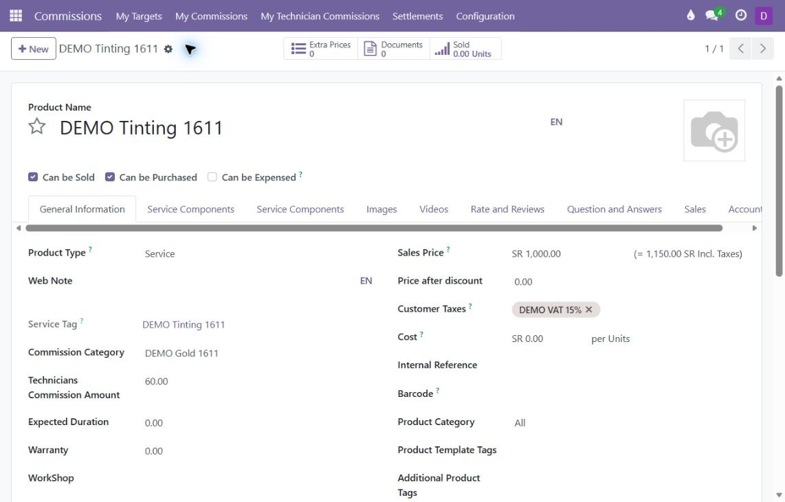
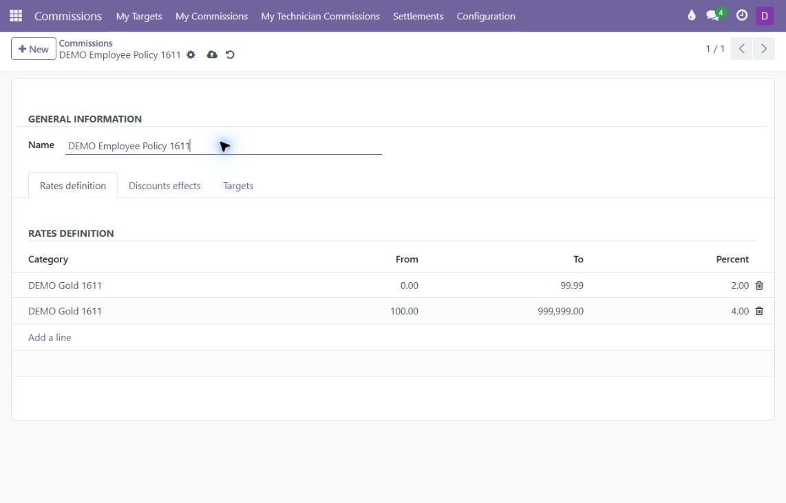
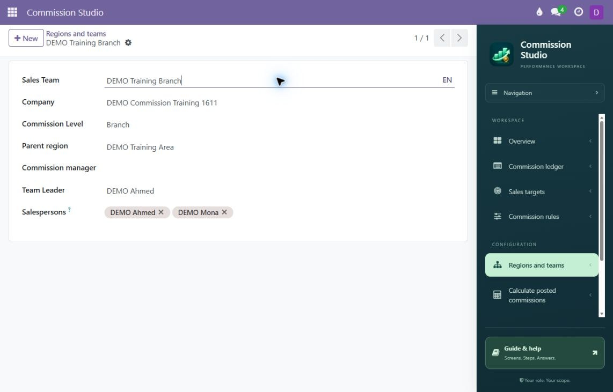
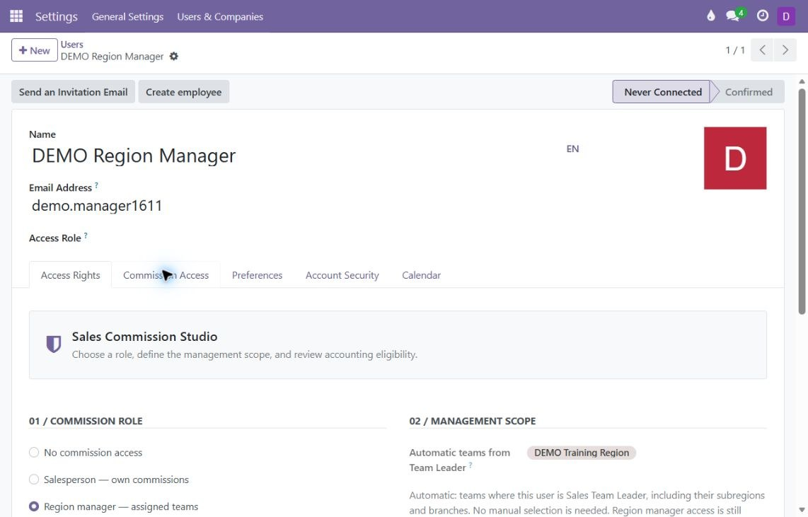
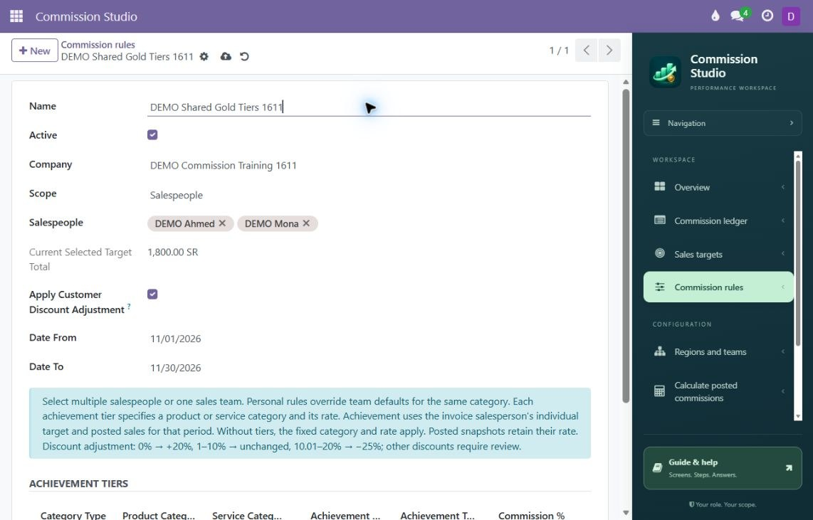
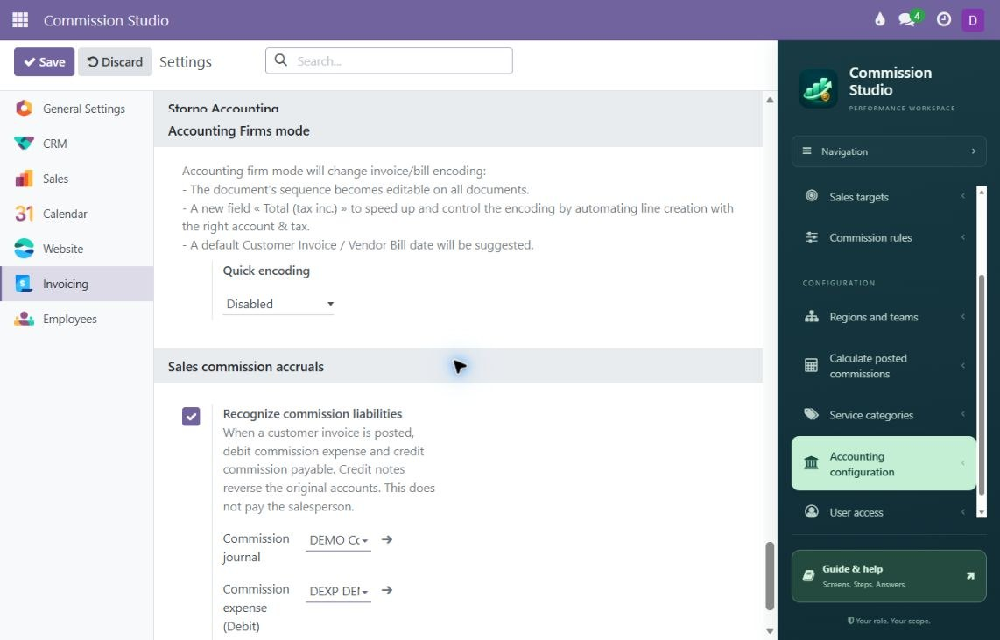
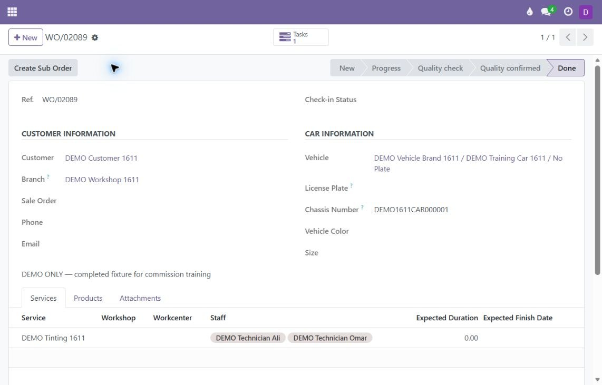
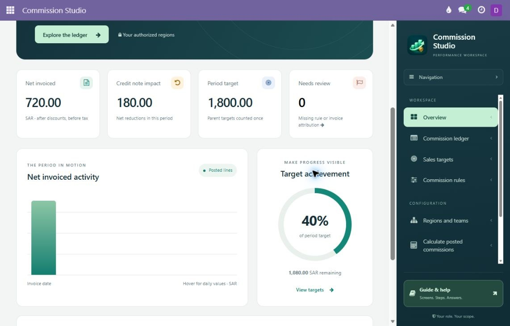

العمولة من أول الإعداد
لحد المراجعة والتسوية
موديولين وحسابات واضحة ومثال كامل جوه أودو
كل حقل ليه شرح وكل نتيجة تقدر تراجع أصلها
شوف الخطوات
تسجيل من نسخة تدريب محلية معزولة بنفس كود الموديولين على test
الأسماء والفواتير والأرقام الظاهرة كلها DEMO
نفس البيع ونتيجتين مختلفتين بسبب طريقة الحساب
| النظام | الحساب | النتيجة |
|---|---|---|
| Studio | وقت الترحيل تحقيق100% وشريحة4%: 36 −7.20 | 28.80 SAR |
| تسوية الموظف | وقت التسوية تحقيق80% وشريحة2%: 720 ×2% | 14.40 SAR |
| الفنيون | عمولة خدمة مكتملة60 ÷فنيين2 | 30 +30 SAR |
الحسابات منفصلة — متجمعش النتائج كمستحق واحد من غير مراجعة السياسة
الضريبة135 على الفاتورة و27 على المرتجع مستبعدة من العمولة
ابدأ من هنا — الموديولين بيعملوا إيه

أهلا بيك. في الفيديو ده هنشرح موديولين العمولات على أودو سبعتاشر، بالمصري وبمثال كامل. الأول اسمه كوميشنز، وده فيه تسويات الموظفين وتسويات الفنيين. والتاني كوميشن ستوديو، وده فيه سجل عمولات المبيعات والتارجت والفرق والشرائح والمرتجعات والقيود المحاسبية. الاتنين بيشاركوا تصنيفات الخدمات، لكن حساباتهم منفصلة. ما تجمعش نتيجتهم وتعتبرها مستحق واحد من غير مراجعة سياسة شركتك. كل اللي هنكتبه هنا بيانات تدريب، والنسب أمثلة للشرح. هنجهز الخدمة والموظف، ونشوف فاتورة ومرتجع، وبعدها نراجع التسوية والأثر المحاسبي.
الحقول ومعناها
| اسم الحقل أو الخطوة | بتعمل إيه وإمتى تستخدمها |
|---|---|
| Commissions | تسويات موظفين حسب صافي الفترة + تسويات فنيين حسب تنفيذ الخدمة |
| Sales Commission Studio | لقطة عمولة لكل سطر فاتورة وترابطها بالبيع والفريق والمحاسبة |
| Commission Category | تصنيف خدمة مشترك؛ الحسابات والنتائج منفصلة |
الخدمة والتصنيف وعمولة الفنيين

نبدأ من تعريف الخدمة. عندنا خدمة تدريب اسمها ديمو تينتنج، وسعرها ألف ريال. نوع المنتج سيرفس. خانة كوميشن كاتيجوري بتحدد تصنيف الخدمة اللي قواعد عمولة الموظف وستوديو هتستخدمه. هنختار ديمو جولد. التصنيف هنا مختلف عن برودكت كاتيجوري، اللي ستوديو بيستخدمه للبضاعة. خانة تكنيشنز كوميشن أماونت هنكتب فيها ستين ريال. دي عمولة الخدمة كلها للفنيين، مش ستين لكل فني، ومش نسبة من سعر الفاتورة. لما الخدمة تخلص على أمر عمل مكتمل، الستين بيتوزعوا بالتساوي على الفنيين الموجودين في ستاف بتاع الخدمة. هنرجع لمثال فنيين، نصيب كل واحد تلاتين.
الحقول ومعناها
| اسم الحقل أو الخطوة | بتعمل إيه وإمتى تستخدمها |
|---|---|
| Product Type | اختار Service للخدمة؛ Studio يختار نوع التصنيف حسب نوع المنتج |
| Commission Category | على متغير المنتج؛ هو المفتاح لتصنيف الخدمة في الموديولين |
| Technicians Commission Amount | مبلغ الخدمة كلها، بيتقسم بالتساوي على Staff |
| Product Category | ده تصنيف البضاعة في Studio؛ مختلف عن تصنيف عمولة الخدمة |
Commissions — تعريف شرائح الموظفين

ندخل تطبيق كوميشنز، وبعده كونفيجريشن، ثم كوميشنز. نفتح قاعدة التدريب ونكتب اسم واضح. في ريتس ديفينيشن كل سطر فيه كاتيجوري، وفروم، وتو، وبيرسنت. فروم وتو هنا حدود نسبة تحقيق التارجت، مش مبلغ الفاتورة. في مثالنا تصنيف جولد من صفر لحد تسعة وتسعين فاصلة تسعة وتسعين عمولته اتنين في المية، ومن مية لحد حد كبير محدد عمولته أربعة في المية. في الموديول ده تو لازم يكون حد فعلي، الصفر مش معناه مفتوح. خلّي حدود نفس التصنيف ما تتداخلش، لأن السطور المطابقة ممكن تتحسب مع بعض. القاعدة دي تخص تسوية الموظفين، ومش هي نفسها قاعدة ستوديو.
الحقول ومعناها
| اسم الحقل أو الخطوة | بتعمل إيه وإمتى تستخدمها |
|---|---|
| Name | اسم سياسة تسوية الموظفين |
| Category | تصنيف عمولة الخدمة |
| From / To | حدود نسبة تحقيق التارجت شاملة الطرفين؛ تجنب التداخل |
| Percent | نسبة العمولة على صافي السطور المطابقة |
| To = 0 | في Commissions حد رقمي فعلي؛ مش مفتوح |
Commissions — تأثير خصم العميل

نفتح ديسكاونتس إفكتس. هنا فروم وتو هما نسبة خصم العميل على سطر الفاتورة. أما كوميشن أدجستمنت فهي نسبة تعديل العمولة نفسها. الموجب بيزوّد، والسالب بيقلل. هنكتب خصم صفر وصفر، وتعديل موجب عشرين. وخصم من واحد لعشرة، وتعديل صفر. ومن عشرة فاصلة صفر واحد لعشرين، وتعديل سالب خمسة وعشرين. لو العمولة الأساسية أربعين ريال، من غير خصم تبقى تمانية وأربعين. ولو خصم العميل خمستاشر في المية، تبقى تلاتين ريال. التعديل بيتعمل بعد حساب العمولة على صافي السطر بعد خصم العميل، ومن غير الضريبة. القيم دي قابلة للتجهيز في كوميشنز، فلازم تختاروا سياسة الشركة وتراجعوا الحدود.
الحقول ومعناها
| اسم الحقل أو الخطوة | بتعمل إيه وإمتى تستخدمها |
|---|---|
| From / To | حدود خصم العميل على سطر الفاتورة |
| Commission Adjustment % | تعديل نسبي للعمولة نفسها؛ +20 زيادة، −25 تقليل |
| Discount deduction | حقل تقني بالتسوية؛ التعديل الموجب قد يظهر بقيمة خصم سالبة لأن الإجمالي = الأساسي − هذا الحقل |
| Total Amount | عمولة السطر بعد تعديل أثر الخصم |
Commissions — تارجت الموظف والوظيفة

نفتح تارجتس. نقدر نحدد تارجت حسب الوظيفة، أو نحط تارجت لموظف بعينه. لو الموظف له الاتنين، القيمة الخاصة بالموظف هي اللي بتستخدم. في التدريب هنختار ديمو أحمد ونكتب تسعمية ريال. لازم الموظف يكون مربوط بمستخدم أودو، لأن التسوية بتجمع سطور الفواتير من إنفويس سيلز بيرسن اللي مربوط بالموظف. دي نقطة مهمة جدا. موديول كوميشنز بيقرأ مندوب الفاتورة، أما ستوديو فبيقرأ المندوب وفريقه من أمر البيع الأصلي. عشان المقارنة في مثالنا تبقى مفهومة، هنخلي نفس المستخدم على أمر البيع والفاتورة. نسبة التحقيق هتساوي صافي الفواتير المؤهلة على تارجت الموظف في مية.
الحقول ومعناها
| اسم الحقل أو الخطوة | بتعمل إيه وإمتى تستخدمها |
|---|---|
| Targets by job position | تارجت كل الموظفين الموجودين على الوظيفة |
| Targets by employee | تارجت خاص بالموظف وله أولوية على الوظيفة |
| Employee / User | اربط الموظف بمستخدم صحيح قبل التسوية |
| Invoice Salesperson | مصدر نسبة المبيعات للموظف في Commissions |
| Achievement | صافي السطور المؤهلة ÷ التارجت ×100؛ لو التارجت صفر فالتحقيق صفر |
Studio — المناطق والفرق والصلاحيات

ندخل كوميشن ستوديو، وبعده ريجنز آند تيمز. الهيكل منطقة، ومنطقة فرعية، وفرع. نحدد الشركة ومستوى الفريق وبارنت ريجن، ونربط الأعضاء وقائد الفريق. قيادة الفريق بتحدد نطاق مدير المنطقة وفروعه، لكنها لوحدها مش بتمنح دور العمولات. من المستخدمين، تبويب كوميشن أكسس، فيه سيلز بيرسن للمندوب، وريجن مانجر لمدير المنطقة، وكوميشن أدمنستريتور للإدارة. فيه فرق بين أوتوماتيك تيمز الناتجة من القيادة، وأديشنال مانجد ريجنز للإسناد الإضافي. المندوب يشوف عمولاته، والمدير يشوف نطاقه، والإدارة تشوف الشركات المسموحة ليها. صلاحيات الحسابات منفصلة، وهنشرح أثرها وقت القيد.
الحقول ومعناها
| اسم الحقل أو الخطوة | بتعمل إيه وإمتى تستخدمها |
|---|---|
| Company | الشركة المالكة للفريق؛ الهيكل لازم يبقى متسق |
| Commission Level | Region / Subregion / Branch |
| Parent Region | أب بمستوى أعلى ولنفس الشركة؛ بدون دورة في الهيكل |
| Team Leader | يوفر نطاق القيادة مع وجود دور Region manager |
| Commission Manager | إسناد إضافي اختياري؛ مش بديل عن الدور الأمني |
| Members | أعضاء الفريق؛ العضوية وحدها مش صلاحية مدير منطقة |
| Commission Access | No access / Salesperson / Region manager / Commission administrator |

Studio — فترة التارجت وتوزيعه

نفتح سيلز تارجتس. نحدد الشركة والفريق ونوع الفترة. ممكن شهري أو ربع سنوي أو نصف سنوي أو سنوي. بداية الفترة لازم تبقى أول شهر في الفترة وأول يوم منه. هنا هنستخدم نوفمبر ألفين ستة وعشرين، وإجمالي تارجت الفريق ألف وتمانمية ريال. زر ديستريبيوت تو ممبرز آند مانجرز بيوزع على الأعضاء والمديرين الحاليين، وبيستبدل التوزيع القديم، فراجعه قبل الضغط. نقدر نعدل الأنصبة يدوي. في مثالنا أحمد تسعمية، ومنى تسعمية. لازم مجموع الأنصبة يساوي ألف وتمانمية قبل حساب قواعد الشرائح، ولازم نصيب المندوب يبقى موجب. رقم التارجت الظاهر في القاعدة إجمالي الاختيارات الحالية، مش نصيب كل مندوب لوحده.
الحقول ومعناها
| اسم الحقل أو الخطوة | بتعمل إيه وإمتى تستخدمها |
|---|---|
| Period Type | Monthly / Quarterly / Half-yearly / Yearly |
| Period Start / Date End | أول يوم بالفترة؛ النهاية تتحسب تلقائي |
| Amount | إجمالي تارجت الفريق بعملة الشركة |
| Distribute to Members and Managers | يستبدل الأنصبة السابقة بالتوزيع المتساوي الحالي |
| User / Amount | نصيب كل عضو أو مدير؛ المجموع لازم يساوي الإجمالي |
| Current Selected Target Total | إجمالي الأنصبة الحالية المرئية للاختيارات؛ الحساب يستخدم نصيب مندوب السطر |
Studio — قاعدة مشتركة وشرائح حسب التصنيف

نفتح كوميشن رولز. نكتب اسم القاعدة والشركة وتواريخ السريان. سكوب سيلز بيبول بيسمح بأكتر من مندوب في نفس القاعدة، وسيلز تيم بيطبق على الفريق المحدد بالضبط، من غير فروعه تلقائي. القاعدة الشخصية ليها أولوية عن قاعدة الفريق لنفس التصنيف والتاريخ، والتداخل داخل نفس النطاق مرفوض. من غير أتشيفمنت تيرز، بيتستخدم التصنيف والنسبة الثابتة. مع الشرائح، كل سطر ليه نوع تصنيف، بضاعة أو خدمة، والتصنيف نفسه، وحدود التحقيق ونسبة العمولة. هنحط جولد أقل من مية باتنين في المية، ومن مية فأكتر بأربعة. هنا تحديدا الحد الأعلى صفر معناه مفتوح. التحقيق بيتحسب لمندوب الفاتورة الأصلي ونصيبه الشخصي في التارجت. التصنيف اللي مالوش شريحة مطابقة عمولته صفر.
الحقول ومعناها
| اسم الحقل أو الخطوة | بتعمل إيه وإمتى تستخدمها |
|---|---|
| Scope / Salespeople | قاعدة واحدة لعدة مستخدمين |
| Scope / Sales team | قاعدة لفريق محدد بالضبط؛ لا تشمل الأبناء تلقائي |
| Date From / Date To | سريان القاعدة حسب تاريخ الفاتورة |
| Category Type | Product category للبضاعة أو Service category للخدمات |
| Achievement From / To % | حدود التحقيق لنفس التصنيف؛ الحد الأعلى صفر = مفتوح هنا |
| Commission % | النسبة المطبقة على صافي السطر؛ الشخصية تتقدم على قاعدة الفريق |
| No matching tier | مع وجود الشرائح: التصنيف بلا شريحة مطابقة عمولته صفر؛ لا يرجع للنسبة الثابتة |
Studio — تعديل الخصم والقيود الاختيارية

في قاعدة ستوديو فيه أبلاي كاستمر ديسكاونت أدجستمنت. لما نفعله، خصم صفر بيزوّد العمولة عشرين في المية. ومن واحد لعشرة بيسيبها زي ما هي. ومن عشرة فاصلة صفر واحد لعشرين بيقللها خمسة وعشرين في المية. غير الحدود دي بيحتاج مراجعة، حتى خصم نص في المية مثلا. بعد كده من أكونتينج كونفيجريشن نقدر نفعّل قيد استحقاق العمولة للشركة، ونختار يومية متنوعة، وحساب مصروف مدين، وحساب التزام دائن. لازم الحسابات مختلفة وصحيحة ولنفس الشركة. التفعيل اختياري، ومش معناه دفع فلوس ولا عمل مسير مرتبات. في نسخة التدريب جهزنا يومية وحسابات تدريب عشان نشوف القيد الناتج.
الحقول ومعناها
| اسم الحقل أو الخطوة | بتعمل إيه وإمتى تستخدمها |
|---|---|
| Apply Customer Discount Adjustment | سياسة Studio: 0% زيادة20%؛ 1–10% بدون تغيير؛ 10.01–20% تقليل25%؛ غيرها Needs review |
| Automatically accrue sales commissions | تفعيل محاسبي اختياري لكل شركة |
| Commission journal | يومية Miscellaneous صحيحة ولنفس الشركة والعملة |
| Commission expense (Debit) | حساب مصروف مدين |
| Commission payable (Credit) | حساب التزام دائن؛ مختلف عن المصروف |
| Payment | قيد الاستحقاق لا ينشئ دفعة ولا مسير مرتبات |
المثال العملي — أمر البيع والفاتورة

نفتح أمر بيع التدريب. العميل ديمو كاستمر، والمندوب أحمد، والفريق فرع التدريب. الخدمة ألف ريال، وخصم العميل عشرة في المية، فالصافي تسعمية. ضريبة الخمستاشر في المية تساوي مية خمسة وتلاتين، وإجمالي الفاتورة ألف خمسة وتلاتين. على الفاتورة نراجع نفس المندوب، والتاريخ في نوفمبر، والخدمة والتصنيف. وهي درافت لسه مفيش عمولة ستوديو. لما نضغط كونفيرم وتبقى بوستد، التحقيق الشخصي تسعمية على تسعمية يساوي مية في المية. شريحة الخدمة أربعة في المية، ومع خصم عشرة مفيش تعديل. يبقى تسعمية في أربعة في المية يساوي ستة وتلاتين ريال. الضريبة مش داخلة في العمولة، وأمر البيع لوحده مش بيكسب عمولة.
الحقول ومعناها
| اسم الحقل أو الخطوة | بتعمل إيه وإمتى تستخدمها |
|---|---|
| Salesperson / Sales Team on order | مصدر إسناد Studio؛ السطور المرتبطة بأوامر متعددة لازم تتفق |
| Invoice Salesperson | تستخدمه تسوية Commissions؛ وحّد المستخدم في المثال |
| Invoice Date | يحدد فترة الاحتساب والتارجت وقاعدة السريان |
| Discount / Taxes | العمولة على الصافي بعد الخصم ومن غير الضريبة |
| Draft / Posted | Studio يحسب بعد الترحيل؛ أمر البيع والمسودة لا يكسبوا عمولة |
| Down payments / Service advances | مستبعدة من قواعد الاحتساب هنا |
سجل العمولة — النسبة واللقطة والأصل

نفتح كوميشن ليدجر ونفتح سطر فاتورة التدريب. هنلاقي الفاتورة والمنتج والتصنيف والمندوب والفريق والقاعدة. بيس هو الصافي بعملة الشركة، وريت هي النسبة وقت الاحتساب، وبيرسونال تارجت تسعمية، وأتشيفمنت مية، والعمولة ستة وتلاتين. السجل ده للقراءة ومش للتعديل اليدوي. تغيير القاعدة بعد كده مش بيعيد كتابة اللقطة القديمة. لو رجعنا الفاتورة درافت وبعدين رحّلناها تاني، اللقطة بتتحسب من جديد بالقواعد السارية وقت إعادة الاحتساب. ولو ليها مرتجع مرحّل مرتبط، لازم التعامل مع المرتجع الأول. حركة العملات الأجنبية ليها تفاصيل، لكن المرتجع المرتبط بيحافظ على نسبة وقيمة العمولة الأصلية بالنسبة للكمية المرتجعة.
الحقول ومعناها
| اسم الحقل أو الخطوة | بتعمل إيه وإمتى تستخدمها |
|---|---|
| Base / Currency | القيمة الموقعة بعملة الشركة من السطر المحاسبي المرحّل |
| Rate / Amount | النسبة والعمولة المحفوظين وقت الاحتساب |
| Personal Target / Achievement % | لقطة نصيب المندوب ونسبة التحقيق وقت الترحيل |
| Rule / Category label | مرجع القاعدة واسم التصنيف المحفوظ |
| Origin / Original entry | يربط مرتجع العمولة بسطره الأصلي |
| Accounting Status / Accrual entry | Needs review / Zero / Not booked / Accrued ورابط قيد الاستحقاق |
المرتجع الجزئي — يرجع العمولة الأصلية

نرجع للفاتورة الأصلية ونستخدم كريديت نوت، عشان الربط بالأصل يبقى واضح. هنرجع عشرين في المية من الخدمة، يعني الكمية صفر فاصلة اتنين. الصافي مية وتمانين، والضريبة سبعة وعشرين، والإجمالي ميتين وسبعة. بعد ترحيل المرتجع، سجل ستوديو بيظهر أساس سالب مية وتمانين وعمولة سالب سبعة فاصلة اتنين، بنفس الأربعة في المية الأصلية. صافي عمولة المثال ستة وتلاتين ناقص سبعة فاصلة اتنين، يساوي تمانية وعشرين فاصلة تمانية. حتى لو التحقيق الحالي نزل بعد المرتجع، بنعكس نصيب المرتجع من العمولة الأصلية. المرتجع اليدوي أو الربط الملتبس ممكن يطلع نيدز ريفيو. استخدم العكس من الفاتورة الأصلية وراجع السطر الأصلي خصوصا مع تكرار نفس المنتج.
الحقول ومعناها
| اسم الحقل أو الخطوة | بتعمل إيه وإمتى تستخدمها |
|---|---|
| Credit Note | الأفضل إنشاؤها من الفاتورة الأصلية |
| Quantity = 0.20 | في المثال رجعنا خمس الخدمة: صافي180 وضريبة27 |
| Origin | المرجع الدقيق لسطر الفاتورة الأصلية، مهم مع تكرار المنتج |
| Rate | المرتجع المرتبط يحتفظ بنسبة الأصل؛ مش شريحة التحقيق الجديدة |
| Foreign currency | المرتجع الكامل يعكس العمولة الأصلية حتى مع اختلاف سعر الصرف؛ تقارير صافي الفاتورة تستخدم أرصدتها المرحّلة |
| Reset to Draft | يلغي اللقطة وإعادة الترحيل تعيد احتسابها؛ راجع المرتجعات المرتبطة أولًا |
تسوية الموظف — المقارنة مع Studio

دلوقتي نرجع كوميشنز ونفتح سيتلمنتس. نعمل تسوية للشركة وفترة نوفمبر ونختار قاعدة الموظفين. نضغط سيتل، ونراجع السطور. صافي الفاتورة تسعمية ناقص مرتجع مية وتمانين يساوي سبعمية وعشرين. التحقيق على تارجت تسعمية يبقى تمانين في المية. في تسوية الموظفين الشريحة بتتحدد وقت التسوية على صافي الفترة، فعمولتنا هنا اتنين في المية، يعني أربعتاشر فاصلة أربعة ريال، وخصم عشرة ملوش تعديل. لاحظ الفرق المقصود: ستوديو احتفظ بلقطة الأربعة في المية وقت ترحيل الفاتورة، فصافي سجلّه تمانية وعشرين فاصلة تمانية. التسوية هنا أعادت تحديد شريحة الفترة عند تمانين في المية. دول نظامين منفصلين، فلا تجمعهم، وراجع سياسة الشركة قبل اعتماد المستحق.
الحقول ومعناها
| اسم الحقل أو الخطوة | بتعمل إيه وإمتى تستخدمها |
|---|---|
| Commissions | ممكن اختيار عدة سياسات؛ راجع التداخل لنفس الموظف |
| From / To / Company | فترة الفواتير المؤهلة والشركة |
| Settle | يولّد السطور ويغيّر الحالة إلى Settled |
| Invoiced Amount / Percent | صافي الفترة ونسبة تحقيقها وقت التسوية |
| Amount to Settle / Discount Deduction / Total | الأساسي، أثر الخصم، ثم الناتج النهائي |
| Invoices lines | الأصل المحاسبي للمراجعة؛ التسوية لا تنشئ دفعًا تلقائيًا |
| Cancel | يغير حالة التسوية؛ مش عكس قيد دفع |
تسوية الفنيين — الخدمة وStaff وDone

نفتح أمر العمل التدريبي ونراجع الخدمة والفنيين في ستاف. هنا عندنا فنيين تدريب، مش مستخدمين المبيعات. عمولة الخدمة من المنتج ستين ريال، فتتقسم تلاتين لكل فني. عشان تدخل التسوية، أمر العمل لازم يكون دون، والخدمة ليها ديت إند داخل الفترة. بعد كده نفتح تكنيشنز سيتلمنتس ونحدد من وإلى ونضغط سيتل. نشوف سطر لكل فني والمبلغ والخدمات. لو مفيش ستاف، الخدمة بتتعدى من غير توزيع. ونفس الخدمة لو اتكررت كمهمة مكتملة، كل تنفيذ بيتحسب، حتى لو قائمة أسماء المنتجات ما بتكررش الاسم. راجع أوامر العمل والفترة قبل الاعتماد، وتجنب تسويات متداخلة لنفس الشغل لأن الموديول مش سجل دفع بيمنع تكرار الصرف تلقائي.
الحقول ومعناها
| اسم الحقل أو الخطوة | بتعمل إيه وإمتى تستخدمها |
|---|---|
| Staff | الفنيون المعينون على الخدمة نفسها |
| Technicians Commission Amount | مبلغ ثابت من المنتج ÷ عدد Staff؛ بدون فنيين لا توزيع |
| Work Order State = Done | لازم أمر العمل يكون مكتمل |
| Service Date End | انتهاء الخدمة داخل الفترة؛ راجع أعمال آخر يوم لأن المقارنة بتاريخ/وقت |
| Settle / Amount / Services | حساب نصيب كل فني مع المنتجات/الخدمات المرتبطة |
| مراجعة الشركات والفترات | بحث خدمات تسوية الفنيين في النسخة الحالية لا يضيف شرط شركة صريح؛ راجع السطور في البيئات متعددة الشركات ولا تعتمد تسويات متداخلة كدفعات مستقلة |

المراجعة والتاريخ والـDashboard والقيد

نرجع ستوديو. نيدز ريفيو معناها إعداد ناقص أو أصل البيع مش واضح، والعمولة صفر لحد المراجعة. نفتح السطر ونقرأ سبب المشكلة. كالكوليت بوستد كوميشنز بيحسب الفواتير التاريخية الناقصة في الشركة والفترة المختارة، بحد خمسمية فاتورة في الدفعة، وممكن يعيد محاولة سطور المراجعة بعد إصلاح السبب. بيحافظ على اللقطات المحسوبة، ومش بيرحّل قيود تاريخية في السر. في الداشبورد نختار الفترة والفريق، ونراجع صافي المبيعات وأثر المرتجعات والعمولة والتارجت والتحقيق وعدد المراجعات، ونفتح التفاصيل من الكروت. أما قيد المثال، فهو مدين مصروف ستة وتلاتين ودائن التزام ستة وتلاتين. المرتجع بيعكس سبعة فاصلة اتنين من نفس الحسابات الأصلية. دفع العمولة والتسوية البنكية خطوة منفصلة للمحاسبة، ومش زر هنا.
تحقيق الفريق في Dashboard =720 ÷1800 =40%
تحقيق أحمد الشخصي الحالي =720 ÷900 =80%
ولقطة الفاتورة الأصلية كانت100% قبل المرتجع
مثال المراجعة100 ريال في أكتوبر منفصل، فلا يدخل أرقام نوفمبر
الحقول ومعناها
| اسم الحقل أو الخطوة | بتعمل إيه وإمتى تستخدمها |
|---|---|
| Needs review / Reason | عمولة صفر مؤقتًا مع سبب نقص القاعدة أو غموض أصل البيع |
| Calculate posted commissions | احتساب تاريخي صريح للشركة والفترة؛ بحد500 فاتورة للدفعة |
| Retry review entries | إعادة المحاولة بعد إصلاح السبب؛ يحافظ على اللقطات الناجحة |
| Historical accrual booking | يتطلب Commission administrator وAccounting administrator معًا؛ احجز الأصل قبل المرتجع |
| Dashboard Period / Team | كل المقاييس ضمن الفلاتر والصلاحيات والشركات المختارة |
| Net invoiced / Credit note impact | صافي المبيعات بعد الخصم وقبل الضريبة وأثر المرتجعات |
| Net commission / Target / Achievement | صافي العمولة والهدف والتحقيق؛ الأب والفرع لا يتجمعوا مرتين |
| Accrual / Refund | مدين مصروف36 ودائن التزام36؛ المرتجع مدين التزام7.20 ودائن مصروف7.20 |



مراجعة نهائية — قبل الاعتماد

نراجع المثال مرة أخيرة. سعر ألف، خصم عشرة، صافي تسعمية، ضريبة مية خمسة وتلاتين. تارجت أحمد تسعمية، وتحقيق وقت الترحيل مية في المية. ستوديو سجّل ستة وتلاتين، والمرتجع عشرين في المية خصم سبعة فاصلة اتنين، فالصافي تمانية وعشرين فاصلة تمانية. تسوية الموظف حسبت الفترة بعد المرتجع، فتحقيقها تمانين في المية ونسبتها اتنين، ونتيجتها أربعتاشر فاصلة أربعة. الفنيين ليهم ستين عن الخدمة المكتملة، تلاتين لكل واحد. قبل أي اعتماد راجع الشركة والفترة والمندوب والتصنيف والتارجت والشرائح والخصم والمرتجعات وستاف وتاريخ الانتهاء وحالة أمر العمل. تحت الفيديو هتلاقي نفس الشرح مكتوب، وأسماء الحقول ومعناها، ومثال بالأرقام، وزر يفتح كل جزء في وقته.
الحقول ومعناها
| اسم الحقل أو الخطوة | بتعمل إيه وإمتى تستخدمها |
|---|---|
| Studio | 36 − 7.20 = 28.80؛ لقطة4% ثم عكس نصيب الأصل |
| Employee settlement | 720 ÷900 =80%؛ شريحة2%؛ الناتج14.40 |
| Technicians | 60 ÷2 =30 لكل فني؛ إجمالي60 |
| اعتماد المستحق | راجع السياسة قبل الجمع بين أي نظامين؛ الأمثلة لا تحدد سياسة الشركة |